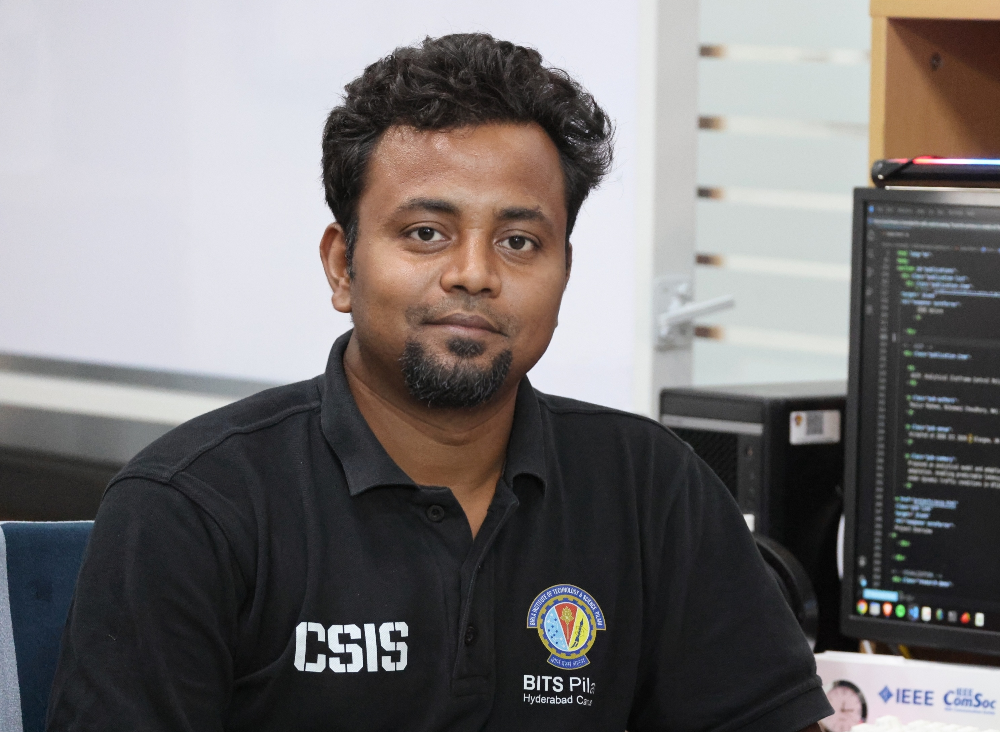

Joint Doctoral Researcher • 6TiSCH • Smart City IoT Systems
BITS Pilani Hyderabad • La Trobe University, Melbourne
Designing adaptive scheduling and resource allocation mechanisms for scalable, energy-efficient 6TiSCH-based smart city IoT networks.

I am a joint PhD researcher at BITS Pilani, Hyderabad Campus, and La Trobe University, Melbourne, through the Asian Smart Cities Research and Innovation Network (ASCRIN). My research focuses on adaptive scheduling and resource allocation in 6TiSCH-based IoT networks for smart-city applications. I aim to develop scalable, energy-efficient, and reliable communication mechanisms for dynamic network conditions and bursty traffic.
My research is conducted under the supervision of Prof. Nikumani Choudhury (BITS Pilani Hyderabad Campus) and Prof. Wei Xiang (La Trobe University, Melbourne).
Accepted at IEEE GLOBECOM Workshops 2025 • Taipei, Taiwan
Proposed an adaptive slotframe scheduling mechanism that dynamically adjusts slotframe size according to traffic load, improving energy efficiency, latency, and scheduling responsiveness in 6TiSCH IoT networks.
Project OverviewAccepted at IEEE ANTS 2025 • New Delhi, India
Developed a topology-aware scheduling approach that allocates resources based on node position and traffic conditions to improve reliability, load balancing, and congestion management in multi-hop IoT networks.
Project OverviewAccepted at IEEE ICC 2026 • Glasgow, UK
Proposed an analytical model and adaptive control policy for slotframe adaptation, enabling predictable latency and efficient resource utilization under dynamic traffic conditions in 6TiSCH networks.
Project OverviewReal-time visualization of adaptive scheduling, heterogeneous IoT traffic, and multi-hop forwarding in a smart city 6TiSCH environment.
Teaching Assistant at BITS Pilani Hyderabad Campus
CS F342
CS F303
CS F372
CS F213
CS F372
CS F303
BITS Pilani Email:
p20230482@hyderabad.bits-pilani.ac.in
La Trobe University Email:
Raziur.Rahman@latrobe.edu.au
Address:
I014, Research & Innovation Lab-2
Department of CSIS
BITS Pilani Hyderabad Campus